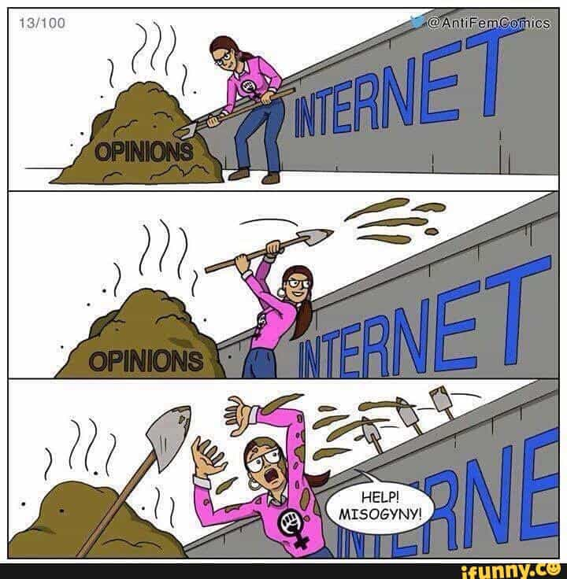

Daryush "Roosh" Valizadeh created ROK in October 2012. You can visit his blog at RooshV.com or follow him on Twitter and Facebook.


We’ve gotten a lot of hate over the past year from politicians, C list celebrities, and female typists, but not from the direct relative of one of the most influential billionaires in the world. That seal has been broken by Mark Zuckerberg’s sister, who turns out is obsessed with the manosphere. Her most recent attacks against us have generated enough criticism that it has forced the “classics scholar” to respond by whining about non-existent death threats and anti-semitism (she’s Jewish) while safely encamped in her $2.1 million home.
How she wants you to think she looks like:
How she really looks like:
I vaguely remember an article she wrote a year ago about pickup titled Bang Rome, obviously copying the title format of my Pulitzer worthy sex guides. The article, which does not offer an excerpt worth quoting, tried to compare Ovid to modern pickup. One year later, she decided to try a different tact to get noticed: she directly attacked me, the alt right, and many other thought leaders in a Jezebel piece titled Putting The Neo Back In Neo Nazi, which is a likely reference to neomasculinity.
Nobody in their right mind would call Return of Kings a bastion of human decency. But when I became a regular (if resistant) reader of the site, most of its vitriol was reserved for predictable targets—especially Muslims and SJWs (“social justice warriors”). While its writers have dabbled in barely-coded anti-Semitism in the past, others have argued against it—though their gradual shift became clear in July with the article “Is Antisemitism Genuine Bigotry Or A Practical Counterdefense Against A Powerful Tribe?” Roosh V, a “neomasculine” man with a poor imitation of a Duck Dynasty beard, has gone from arguing in February that “The Alt Right Is Worse Than Feminism In Attempting To Control Male Sexual Behavior” to saying in August, “While we are not officially an alt right site, we share much overlap with them in the general alternative sphere.” (He also refuses to denounce Richard Spencer for his recent forays into blatant Nazi rhetoric.)
[…]
Only a few weeks ago, Return of Kings published a predictably horrifying article with the title “11 Tips For Raising Your Daughter on the Red Pill” which advises, among other things, that you should hit on waitresses in front of your children so they can see what game looks like.
In another recent article on her blog, she goes after me and Quintus Curtius, who continues to connect hundreds of men with the classics while she perverts it into a grotesque image of social justice.
Predictably, Quintus Curtius has an extremely limited understanding of “how things were like in previous eras.” His stated goal is “to remind readers of the glories of leadership, character, and masculine virtue that can change their lives” — so of course, his understanding of antiquity is of a world inhabited by only a few extremely elite men. He has no sense of or interest in social history, cultural history, women, slaves, children, and broad historical trends. The ancient world is reduced to a textbook model for leadership, character, and masculine virtue.
[…]
Next time you hear either of those arguments made, remember: they are also made by a man who tells stories about raping women in his “Bang” series of “game guides,” who believes that “Women Must Have Their Behavior And Decisions Controlled By Men,” who recently rejoiced because the election of Donald Trump “automatically legitimizes masculine behaviors that were previously labeled sexist and misogynist” — a man who was rejected by the Alt-Right for being insufficiently white himself.
[…]
So why have so many white, male leaders of communities and websites that used to focus on sex and gender shifted in recent months to anti-Semitism, white nationalism, and complaining about “(((the media)))”? In part, of course, because these men were always grossly bigoted and racist.
For living in a multi-million dollar home in a neighborhood with only a 1.7% black population (the national average is 12.6%), she seems terribly concerned about racism. Do you think she has even met a black person during her residence in one of the most expensive zip codes in the United States? It is peculiar why someone who never sees black people would be so concerned about racism, unless of course she is an intolerable hypocrite who hasn’t yet checked her billionaire privilege.
I wouldn’t want to subject you to any more of her pseudo-intellectual writings, but it’s clear from them that she has a serious obsession with masculine writers who have normal testosterone levels, unlike her potato-faced husband, through her admission that she follows badthink sites daily along with the individual personalities behind them. Attacking Quintus Curtius, a man who takes his work seriously, proved to be her greatest mistake. In an article titled When Education Does Not Mean Knowledge: The Case Of Mark Zuckerberg’s Sister, he evaporates her entire educational career in one go.
Character matters in everything, Ms. Zuckerberg, and it affects everything. And this is why I focus on it in my books. If you had a more expansive soul and were possessed of deeper life experiences you might know this.
And this really is the heart of the matter. I emphasize character, morals, and the education of the young because I know how important it is. I am a forty-eight year old man who has more scars than you will ever have. I have fought more battles than you will ever fight. While you were mincing around the halls of Princeton University, I was leading Marines in Okinawa and East Asia.
While you were bullying people for not adhering to your politically-correct ideology, I was starting a law firm, trying cases in court, fighting for the rights of the common man, and making an honest name for myself. This is the difference between you and me. While you are a spoiled child of privilege, I am a man who has earned his way through life through the sweat of his own brow.
Do you want to know why I write? Because I love the subject matter, and I truly believe in its power to bring back what we have lost from our society. I venerate these classical and Renaissance works because I know how true their lessons are for real life. I use them as a source of moral inspiration, a guide to a better life, and as a vision for the elevation of the human spirit.
You, on the other hand, use them as a punch line. You have no real feel for these works. If you did, you would never be able to miss the role of character and virtue in a great many classical and Renaissance works. In fact, I think that deep down, you despise these books.
[…]
Unlike you, I am not a child of privilege. No one ever gave me anything: I made my own way in life as the son of immigrants who did not have the benefit of being royalty like yourself. I earned my love of ancient wisdom with my own effort, and I hold it close to my heart.
Quintus and I also had some laughs at her expense during a recent Culture War chat (starts at 7:30)
Other men have revealed how worthless a PhD from Princeton is these days.
This is a very glaring and instructive example of the penetration of leftist/SJW ideology into every nook and cranny of society. The entire purpose of studying Classics is that the ideas and values of the Greco-Roman tradition are (sometimes literally) written in stone. They are immutable. They are not open to change and interpretation. They are literally foundational. They are the bedrock of Western Civilization. You don’t get to go back and retcon Plato into being an Afro-Caribbean hipster with an interest in women’s issues. These people are literally trying to-write history to suit their modern political agenda. As the commenter astutely pointed out, this is gross cultural appropriation of the worst and most damning type – this is outright cultural theft. They are attempting to steal Classical culture and remake it in the image of social justice (their god).
And it’s clear this Zuckerberg woman is a real piece of work. Her insecurity comes across in her writing (she is desperately in search of an avenue of self-importance to attach her name to). I can’t imagine the sort of psychological strain she must be under. When you’re a neurotic striver of the sort that she is, having to live with the fact that your goofy, Aspergerish brother became a multi-billionaire and culturally significant figure by the age of 25 while you’re reduced to pimping the SJW narrative on some shitty website (which your moneybags brother is no doubt paying for) can’t be good for one’s feeling of self-worth. (Scorpion)
[…]
Donna Zuckerberg should be working on her dissertation on Ancient Greek tragedy and comedy, but somehow she always seems to find herself baking scones and then blogging about them. Follow her delicious adventures at sugarmountaintreats.com [her food blog] or on Facebook.
It’s unfortunate that Donna does not feel free to devote even more time to what is clearly her true passion — cooking, and baking in particular — and is instead obliged to finish her “dissertation” and produce these worthless whiny texts on “Eidolon”. It’s an error and a waste of time, and it probably diminishes the quality of the scones (which should have mostly remained unblogged) and prevents them from being as dreamily delicious as they could be. (Lizard Of Oz)
[…]
The women’s criticism of groups of men who challenge the orthodoxy of our sociopolitical landscape reads like a projection of their own feminine inadequacies and a craving for the male dominance and validation they claim to hate. Tell me a time when either Return Of Kings or the Roosh V Forum praised women like them.
The supreme irony, too, is that Zuckerberg’s brother created Facebook from an original concept called Facemash, which rated the attractiveness of Harvard girls and got the budding entrepreneur in hot water. This was all really no different to anything Return Of Kings currently does in rating women. (Return Of Kings)
How do you think the “classics scholar” responded? What do you think the product of Princeton wrote to Quintus, a man who gave countless historical rebuttals of her odious revisionism? She cried liked a big baby.
I've been fielding anti-Semitic tweets for 24 hours now. Coping mechanisms are key
— Donna Zuckerberg (@donnazuck) December 17, 2016
pictures of my face on a lampshade ARE wrong and evil. They're not comments, they're death threats. Blocking you now.
— Donna Zuckerberg (@donnazuck) December 18, 2016
So many great anti-Semitic tweets today! New friends: before you tweet pics of me as a lampshade, please tell me – who sent you all my way?
— Donna Zuckerberg (@donnazuck) December 16, 2016

The Ivy Leaguer has no clothes. She is no different than a high school girl on Tumblr who accuses you of harassment after you make fun of her claim that she spiritually identifies as a deer. Her primary response was to write an article—not to refute any of the rebuttals against her—but to explain to her apathetic readership that they need to do a better job of supporting her against the criticisms of evil men that she attacked first when she called them racists and rapists.
Do not say any of these to the person receiving the abuse. In fact, you probably shouldn’t say them at all.
Do not suggest that they should consider not writing about topics that draw this kind of hatred. This response is terrible for many reasons, but I’ll limit myself to two here:
1) Don’t blame the victim. Ever. Nobody is ever “asking” for anti-Semitic death threats, unless they literally tweet “please send me anti-Semitic memes for research purposes!”
2) A tiny voice in the writer’s head is almost certainly saying this exact thing, and that voice doesn’t need to be amplified.
Do not assume you know how the writer feels. “You must be curled up in the fetal position right now!” may seem like a sympathetic thing to say, but death threats can provoke a wide range of emotional responses. Instead of assuming, ask, “How are you holding up?”
Even though not one person has said they’d kill her (a lamp shade meme is not a “death threat”), she expects you to accept that the sister of one of the richest men in the world, who is using her education not to breathe life into the classics but to defame men who understand it better than her, and who lives in the top 1% economic bracket nationwide, is a victim of abuse. Her family does not have enough of the pie, and she needs more, so tread carefully and give her support in the exact manner she demands. Bow down you lowly peasant! Rush to her aid! Or maybe not, since it appears she has practically no supporters. Apparently it’s tough to accumulate social justice victim points when you have the super-mega-bucks and are Jewish, a group that happens to be the most privileged in the United States. What person wants to help a woman who never has to worry about working again for the rest of her entire life and can simply live out her days baking scones for a food blog?
Maybe one day we will encounter an enemy who is our intellectual equal, but today is not that day. Instead we must endure adult children who shriek out in pain as they strike us, whose blows effortlessly slide off us like water from a seal’s fur coat. And if Mark Zuckerberg is reading this right now, and there is a good chance he is because his arrogant sister bit off more than she could chew, I want him to know that she is now our “house ho.”
Mark, we have raped your sister’s mind with our ideas and our vigor. We have so burrowed a hole into her head that not a day goes by without her thinking of our ideology, our arguments, and our words. You can do your worst on Facebook, and hide reality to your heart’s content, but you cannot even begin to stop us from wounding your own family. What goes around comes around—you’ve manipulated the minds of millions people who use Facebook, censoring the truth from them, and now we own the mind of your sister.
And I’d surely click the like button on that.
This article was originally published on Roosh V.
Read More: The End Game Of Feminism And Cultural Marxism Is To Eliminate Sex Differences